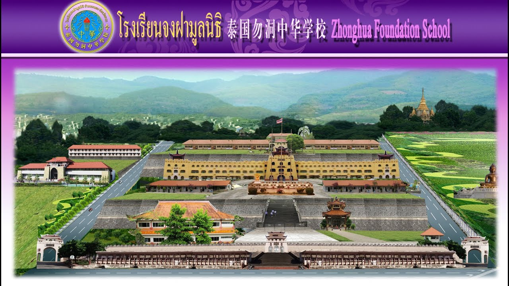
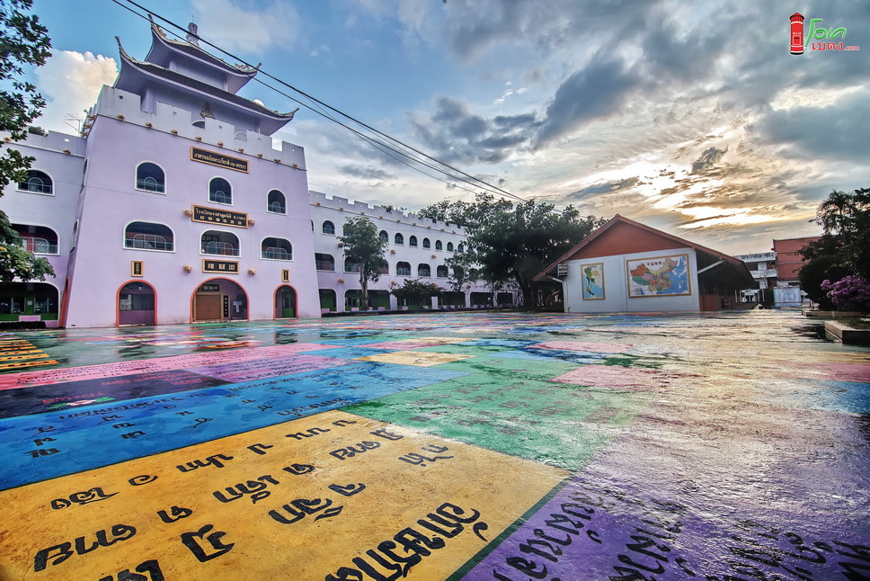

ประวัติความเป็นมา
ประวัติโรงเรียนจงฝามูลนิธิ นับตั้งแต่ปี พ.ศ. 2466 โรงเรียนจงฝามูลนิธิได้ก่อตั้งมาถึงปัจจุบัน เป็นเวลา 99 ปี ทุกครั้งที่เห็นความสำเร็จของนักเรียนแต่ละรุ่น ทำให้ไม่ลืมที่จะระลึกถึงบรรพบุรุษในความพยายามไม่กลัวความยากลำบาก และอุปสรรคต่างๆ ในการสืบทอดภาษา วัฒนธรรมจีนให้แก่ลูกหลานสืบไป ความมุ่งมั่นในปณิธานที่ยืนหยัดและกล้าหาญ พร้อมวิสัยทัศน์ที่ยาวไกล ได้สร้างพื้นฐานที่มั่นคง ดั่งรากแก้วที่แข็งแรงให้กับโรงเรียนจงฝามูลนิธิ เดิมโรงเรียนจงฝาเป็นโรงเรียนที่เป็นอาคารไม้ ได้พัฒนาเป็นอาคารที่ทันสมัยบนพื้นที่ 72 ไร่ มีนักเรียนเกือบ 2,000 คน ความสำเร็จที่เกิดขึ้นมาจากจิตใจอันเป็นกุศล และเสียสละของผู้คนหลายยุคหลายสมัย ที่ริเริ่มดำเนินการอย่างต่อเนื่องไม่ย่อท้อตลอดมา ด้วยความตั้งใจและมุ่งมั่น มีแรงช่วยแรงมีทรัพย์ช่วยทรัพย์ บริจาคที่ดินและเงินเป็นกองทุนที่สำคัญ ในขณะนั้นพ่อค้า ประชาชน และชาวสวนยางได้เปิดประชุมร่วมกันในเรื่องการดำเนินการหาเงินทุนสร้างโรงเรียน โดยมีมติเป็นเอกฉันท์ให้พ่อค้ายาง และชาวสวนยาง ร่วมกันช่วยเหลือสนับสนุนสร้างกองทุนนี้ ความพยายามของคนทั้งหลายได้สำเร็จขึ้นเป็นผลงานที่เรา ได้เห็นในทุกวันนี้ ประวัติและมุมมองของโรงเรียนในอดีต ปัจจุบันและอนาคต สามารถแบ่งออกเป็นประเด็นสำคัญ 4 ขั้นตอน คือ การก่อตั้งโรงเรียน การสร้างโรงเรียน การพัฒนาการจัดการศึกษา และพัฒนาเกี่ยวกับบุคคล การก่อตั้งโรงเรียน โรงเรียนจงฝาเริ่มต้นการสอน โดยอาศัยสำนักงานของหนังสือพิมพ์รายวันฮวาเฉียว ในสมัยนั้นบรรพชนชาวเบตงที่มีความสามารถ โดยมีคุณเผิงจินสุ่ย คุณหลินหมิงชิว คุณเติ้งปิ่งฉวน คุณถังเหินหนาน คุณเจิ้นฝอเซิน คุณซูเปียวฉี คุณกวอสิ้วซุน คุณโหวเปียวปาง และท่านอื่นๆ ได้ร่วมกันนำเสนอการหาเงินทุนสร้างโรงเรียน เพื่อที่จะให้ลูกหลานชาวจีนได้รับการศึกษาภาษาจีน ซึ่งได้รับการตอบรับจากคนในเบตงเป็นจำนวนมาก โดยได้ร่วมกันบริจาคเงินสร้างอาคารไม้ 2 ชั้น 1 หลัง เป็นอาคารเรียนของโรงเรียนจงฝา มีนักเรียนรวม 50 กว่าคน เมื่อปี พ.ศ.2484 เกิดสงครามโลกได้ทำให้โรงเรียนต่างๆต้องยุติการเรียนการสอน และเมื่อสงครามยุติลง ปี พ.ศ.2489 โรงเรียนจงฝาจึงได้เปิดการเรียนอีกครั้ง การเริ่มต้นการจัดการศึกษาครั้งใหม่ มีนักเรียนประมาณ 100 กว่าคนเท่านั้น ด้วยความมานะและพยายามไม่ย่อท้อของคุณครูและผุ้บริหารสมัยนั้น ทำให้ผลของการเรียนการสอนประสบความก้าวหน้า และมีชื่อเสียงเป็นที่ยอมรับมากยิ่งขึ้น ทำให้มีนักเรียนที่มาสมัครเรียนโรงเรียนจงฝาเพิ่มมากขึ้นจนอาคารเรียนไม่เพียงพอ ผู้บริหารจึงได้ประชุมหารือ ขอพื้นที่โรงภาพยนตร์จงซาน บ้านพักของคุณเจื้นฝอเซิน และสมาคมการค้าจีน เพื่อเป็นสำนักงานและอาคารเรียน ทำให้ขณะนั้นโรงเรียนจงฝามีอาคารเป็น 2 แห่ง เพิ่มเงื่อนไขของการก่อตั้งโรงเรียนที่ครบครันขึ้น อันเป็นรากฐานที่ทำให้โรงเรียนเติบโตขึ้นต่อไปในอนาคต การก่อสร้างโรงเรียน มาถึงปี พ.ศ.2493 ด้วยนักเรียนมีจำนวนเพิ่มขึ้นทุกปี อาคารเรียนเดิมไม่สามารถรองรับนักเรียนที่เพิ่มขึ้นได้อีกต่อไป เนื่องจากพื้นที่โรงเรียนเล็กและจำกัดไม่สามารถที่จะขยายได้ ประกอบกับเมืองเบตงได้เจริญมีผู้คนหนาแน่นขึ้นทำให้สิ่งแวดล้อมไม่เงียบสงบไม่เหมาะสมกับสถานที่ตั้งของโรงเรียน คณะผู้บริหารได้ประชุมหารือกัน จนมีมติว่าต้องย้ายโรงเรียน พร้อมได้แต่งตั้งคณะกรรมการก่อสร้างโรงเรียนได้พิจารณาในหลักการต่างๆ จนได้ตัดสินว่าจะซื้อที่ดินจำนวน 22 ไร่ ซึ่งตั้งอยู่ที่ถนนรัตนกิจ ห่างจากตัวเมือง 1 กิโลเมตร มาเป็นที่ของโรงเรียนแห่งใหม่ ขณะนั้นคุณหวังเหวินจ้วนเมื่อได้ทราบเรื่องนี้ ได้บริจาคที่ดินจำนวน 25 ไร่ ให้โรงเรียนเพื่อขยายเขตโรงเรียนให้มากขึ้น ตามมาด้วยคุณเฉินซื่อฮั่น คุณหวังจินอัน คุณหลุยเหมียนหลอ ร่วมกันบริจาคที่ดินอีกจำนวน 25 ไร่ รวมที่ดินทั้งหมด 72 ไร่ และได้ทำการก่อสร้างอาคารเรียนหลังใหม่ เป็นก้าวหนึ่งที่สำคัญของประวัติโรงเรียนจงฝา ซึ่งนำมาสู่การขยายและพัฒนาของโรงเรียนต่อไป โรงเรียนจงฝามีพื้นฐานที่แข็งแกร่ง และมั่นคงเป็นอันดับต้นๆของภาคใต้ คณะกรรมการบริหารได้อาศัยลักษณะของพื้นที่ ที่ตั้งอยู่บนเนินเขาได้ทำการพัฒนาพื้นที่เป็นระดับ 2 ระดับชั้น เพื่อความเหมาะสม พื้นที่ระดับชั้นที่ 1 เป็นสนามกีฬา พื้นที่สนามเด็กเล่น ห้องสมุด และหอพักครู พื้นที่ระดับชั้นที่ 2 เป็นห้องเรียนชั้นเดียว 2 แถว มีห้องเรียน 28 ห้อง และสำนักงาน 1 ห้อง ปี พ.ศ.2499 ได้ดำเนินการปรับพื้นที่ขึ้นอีก 1 ระดับชั้นเป็น 3 ระดับชั้น พื้นที่ระดับชั้นที่ 3 เป็นห้องเรียนชั้นเดียว 1 แถว มี 14 ห้อง ตรงกลางเป็นห้องสำนักงาน 2 ชั้น 1 ห้อง และได้สร้างสนามบาสเกตบอลที่บริเวณพื้นที่ ชั้นที่ 1 เพื่อประโยชน์แก่นักเรียนในการออกกำลังกาย และฝึกฝนทักษะทางด้านกีฬาบาสเกตบอล จนได้สร้างเกียรติประวัติให้กับโรงเรียนจงฝา โดยมีการแข่งขันกีฬาบาสเกตบอล 3 จังหวัดภาคใต้ จังหวัดยะลา ปัตตานี นราธิวาส ซึ่งทีมที่ชนะเลิศ คือ ทีมเจียวซางของเบตง ปี พ.ศ.2512 ได้โอนกิจการให้กับมูลนิธิอำเภอเบตง ตามใบอนุญาตเลขที่9 / 2512 และเปลี่ยนชื่อโรงเรียนจงฝาเป็น “ โรงเรียนจงฝามูลนิธิ ” เปิดทำการเรียนการสอนตั้งแต่ชั้นประถมศึกษาปีที่ 1 ถึงชั้นประถมศึกษาปีที่ 4 สอนวิชาสามัญภาษาจีน พ่อค้า คฤหบดี และประชาชนอำเภอเบตง ให้การสนับสนุนจนโรงเรียนจงฝามูลนิธิเป็นโรงเรียนที่ใหญ่แห่งหนึ่ง มีครู และบุคลากรรวมกัน 130 กว่าท่าน มีนักเรียนเกือบ 2,000 คน ลักษณะเด่นทางสถาปัตยกรรมและการเรียนการสอนที่โดดเด่นนายประพงศ์ อัญชัญศรีชาติ ได้บริจาคทุนทรัพย์ เพื่อการก่อสร้าง ศาลาประดิษฐาน รูปเคารพปรมาจารย์ ขงจื้อ ผู้เป็นปรมาจารย์แห่งการศึกษา มีขนบธรรมเนียมประเพณี พิธีบวงสรวงเซ่นไหว้ สักการบูชา ที่โรงเรียนจงฝามูลนิธิ ทุกปี
การพัฒนาการจัดการศึกษา ในช่วงเวลาของการพัฒนาโรงเรียนจงฝามูลนิธิ มีบุคคลที่เปี่ยมด้วยศรัทธาและเสียสละ บริจาคให้ทุนในการปรับปรุงสาธารณูปโภคอย่างต่อเนื่อง เป็นจำนวนมากเพื่อปรับปรุงคุณภาพ และยกระดับสิ่งสำคัญต่างๆ ที่จำเป็นของโรงเรียน ระหว่านปี พ.ศ.2537-2539 ดร.คุณวุฒิ มงคลประจักษ์ ท่านนายกเทศบาลเมืองเบตง ได้ช่วยเหลือสร้างหลังคาทางขึ้นโรงเรียนหลังคาทางเชื่อมระหว่างห้องเรียนชั้นที่ 2 ไปยังห้องเรียนชั้นที่ 3 สร้างลานจอดรถ ปรับปรุงระบบแสงสว่าง ระบบเครื่องเสียง และในปี พ.ศ.2540 ในสมัยคณะกรรมการบริหารมูลนิธิอำเภอเบตงชุดที่ 10 โดยมี ดร.คุณวุฒิ มงคลประจักษ์เป็นประธานกรรมการ ได้จัดหาทุนสร้างหอประชุมอเนกประสงค์สำเร็จในปลายปี พ.ศ.2541 ปี พ.ศ.2545 มีมติคณะกรรมการบริหารมูลนิธิอำเภอเบตงชุดที่ 19 ให้รื้ออาคารเรียนไม้ชั้นเดียว ซึ่งตั้งอยู่บนพื้นที่ระดับชั้นที่ 2 เพื่อสร้างอาคารเรียนคอนกรีตเสริมเหล็ก 3 ชั้น ลักษณะสถาปัตยกรรมแบบกำแพงเมืองจีน เพื่อรองรับจำนวนนักเรียนที่เพิ่มขึ้นทุกๆปี การดำเนินการได้รับการสนับสนุนทุนทรัพย์จากผู้มีจิตศรัทธาและเสียสละเป็นจำนวนมาก ด้วยความมุ่งมั่นของ ดร.คุณวุฒิ มงคลประจักษ์ประธานกรรมการ และเป็นประธานโครงการก่อสร้าง “ อาคารเฉลิมพระเกียรติ 70 พรรษา ” ได้สำเร็จในปี พ.ศ.2547 ปี พ.ศ.2558 มีมติคณะกรรมการบริหารมูลนิธิอำเภอเบตงชุดที่ 26 ให้มีการก่อสร้างอาคารอนุบาลโรงเรียนจงฝามูลนิธิขึ้น มีเป้าหมาย คือก่อสร้างอาคารเรียน 3 ชั้น 20 ห้องเรียน ห้องสมุด ห้องประชุม โรงอาหาร ลานกิจกรรม และสนามเด็กเล่น โดยใช้พื้นที่ 8 ไร่ งบประมาณ 60 ล้านบาท การพัฒนาของโรงเรียนจงฝามูลนิธิที่เป็นอยู่ทุกวันนี้ เป็นที่ทราบกันโดยทั่วไป ว่าผลสำเร็จที่เกิดขึ้นต้องยกความดีให้กับบรรพบุรุษ ผู้นำท้องถิ่น ผู้มีจิตศรัทธา ที่มีความตั้งใจ เสียสละอย่างยิ่ง ที่ให้การสนับสนุนและเล็งเห็นความสำคัญของการศึกษา
ปรมาจารย์ขงจื๊อ
วันพุธ ที่ 28 กันยายน 2565 ผู้ก่อตั้งหอรำลึกปรมาจารย์ขงจื้อ คุณประพงษ์ อัญชัญศรีชาติ และประธานคณะกรรมการบริหารโรงเรียนจงฝามูลนิธิ คุณสุรินทร์ สกุลสถาพร และคณะกรรมการ ผู้อำนวยการ นางธาอร มณีสุรัตน์และคณะผู้ช่วย นักเรียนระดับมัธยมได้เข้าร่วมกิจกรรมรำลึกปรมาจารย์ขงจื้อ ซึ่งโรงเรียนจงฝามูลนิธิได้จัดกิจกรรมรำลึกปรมาจารย์ขงจื้อในโอกาสวันคล้ายวันเกิดของท่านในทุกๆปี วัตถุประสงค์ในการจัดงานครั้งนี้ 1. เพื่อให้นักเรียนได้รำลึกถึงคุณงามความดีของปรมาจารย์ขงจื้อ 2. เพื่อให้นักเรียนเห็นความสำคัญของการศึกษาและวัฒนธรรมจีนท้องถิ่น 3. เพื่อให้นักเรียนมีความสำนึกในด้านคุณธรรม จริยธรรม ตามคำสอนของปรมาจารย์ขงจื้อ นอกจากนี้ยังมีกิจกรรมวิชาการ การคัดลายมือและเขียนพู่กันจีนของนักเรียนระดับประถมศึกษาจนถึงระดับมัธยมศึกษา เกี่ยวกับคำสอนและประวัติของขงจื้อ เพื่อให้นักเรียนได้มีโอกาสในการพัฒนาศักยภาพด้านการเขียนภาษาจีน
ตึกอาคารเฉลิมพระเกียรติ ๗๒ พรรษา
ภายใต้การบริหารโรงเรียนจงฝามูลนิธิ จัดการเรียนการสอนแบ่งเป็นการดำเนินการ 3 ระดับ คือ ระดับปฐมวัย ระดับประถมศึกษา และระดับมัธยมศึกษา หัวใจสำคัญในการ จัดการศึกษาไม่เพียงแต่ด้านวิชาการ ทางโรงเรียนได้เน้นในเรื่องคุณธรรม จริยธรรมควบคู่กับการเรียน การสอน ตามที่ได้กำหนดปรัชญาที่ว่า “ ภาษาเด่น เน้นคุณธรรม นำวิชาการ ”